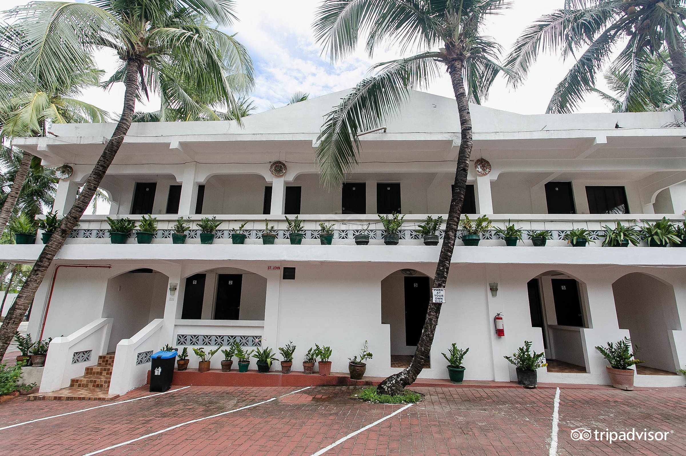
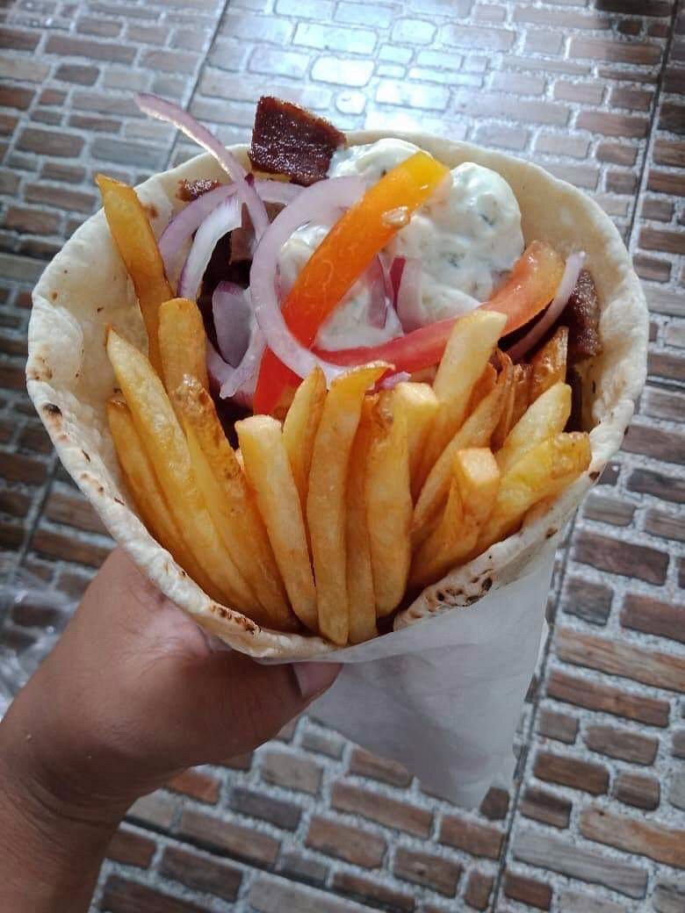
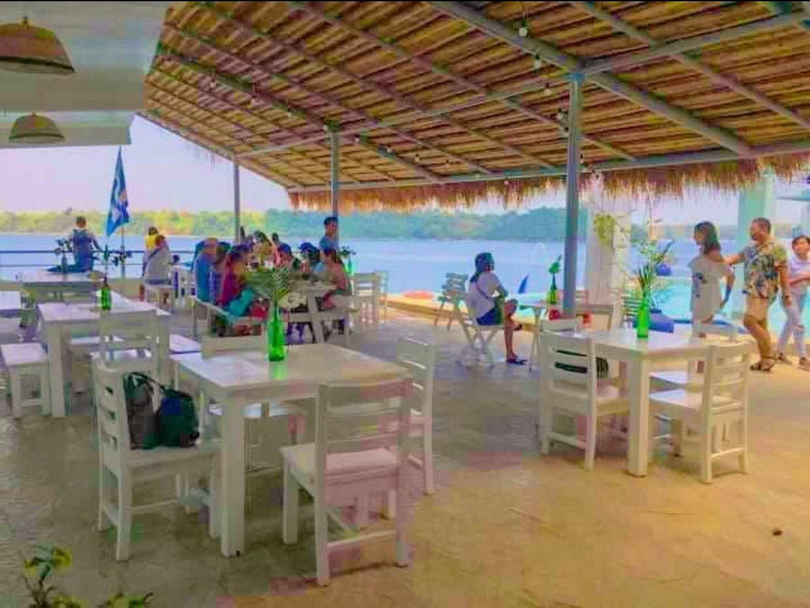
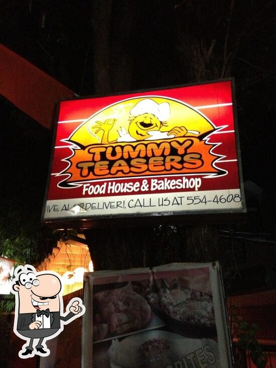
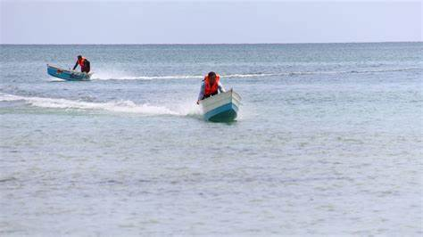
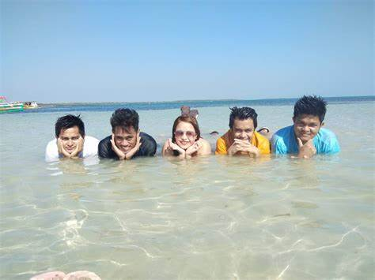
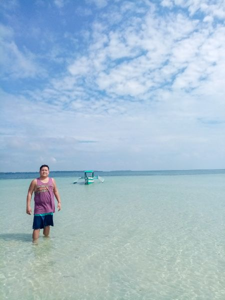
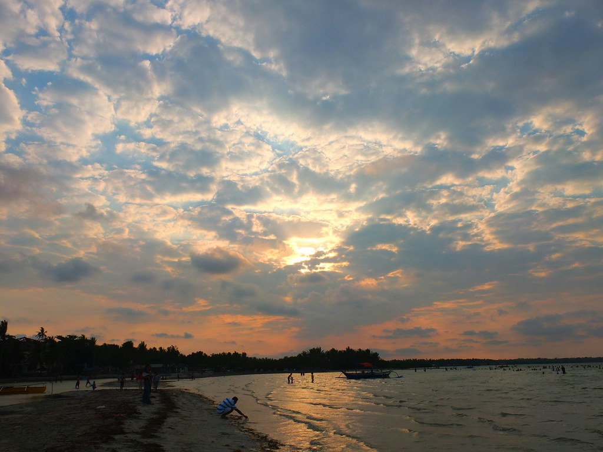
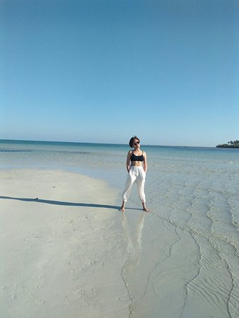

Birdland Beach Club Hotel And Resort
pin_dropLong Beach Street Via Patar Road, Bolinao, Luzon 2406 Philippines

Puerto Del Sol Beach Resort
pin_drop Patar Road Ilog Malino, Bolinao, Luzon 2406 Philippines

Villa Soledad Beach Resort
pin_drop 393, Patar Road Brgy. Estanza, Bolinao, Luzon Philippines

Nykos Kitchen+Bar
pin_dropPatar Road The MunchLab, Bolinao, Luzon 2406 Philippines
+63 75 210 8026

Norte by NYKōS
pin_dropLuciente 1 Don Efren Peralta Sundowners Marina, Bolinao, Luzon 2406 Philippines
+63 912 046 2778

Tummy Teasers
pin_drop16 Don Celino Street, Bolinao, Luzon 2406 Philippines
+63 908 748 9048
How to get there?
By Bus
There are also buses available from Manila to Anda, Pangasinan. You can take a bus from terminals such as Victory Liner or Five Star Bus Company. Buses usually stop at Alaminos City, where you can then take a tricycle or jeepney to Anda..
By Car
You can drive from Manila to Anda, which usually takes around 5-6 hours, depending on traffic and road conditions. Take the North Luzon Expressway (NLEX) and then continue onto the Subic-Clark-Tarlac Expressway (SCTEX). From there, take the Tarlac-Pangasinan-La Union Expressway (TPLEX) until you reach Pangasinan. Continue on the National Highway until you reach Anda.
Travel tips
- While there are accommodations available near Tondol Beach, it's recommended to book in advance, especially during peak seasons. Options range from beachfront cottages to guesthouses and resorts.
- Bring essentials like sunscreen, sunglasses, a hat, insect repellent, and beachwear. It's also a good idea to bring water and snacks, as the amenities near the beach might be limited.
- Bring enough cash with you, as ATMs might not be readily available in the area. Some establishments might not accept credit cards, so it's best to have cash on hand for transactions.
- Consider your transportation options, whether it's driving yourself, taking a bus, or hiring a private van. If you're not driving, make sure to arrange for transportation within Anda and to Tondol Beach in advance.
- Don't hesitate to ask locals for recommendations or assistance. They can provide valuable insights on where to eat, stay, and explore in the area.
- Help keep Tondol White Sand Beach clean by properly disposing of your trash. Respect the natural surroundings and avoid damaging coral reefs or disturbing wildlife while snorkeling or swimming.
- Practice water safety when swimming or engaging in water activities. Be cautious of strong currents and always swim in designated areas. If you're not a confident swimmer, consider wearing a life jacket.
- Take some time to explore other attractions near Tondol Beach, such as Cabongaoan Beach, Tambobong Beach, and the Hundred Islands National Park. Each offers its own unique charm and activities.

1. Balsa Race

2. Swimming

3.Relax and unwind

4. Sunset Watching

5. Take pictures